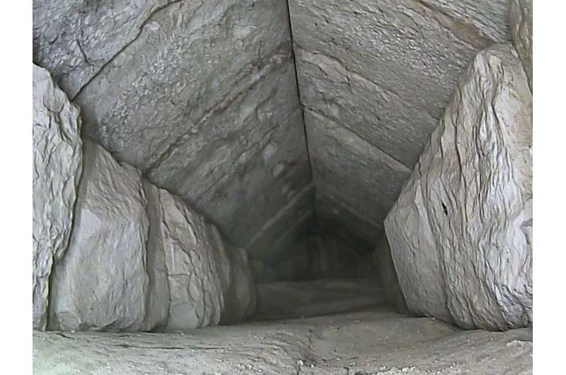
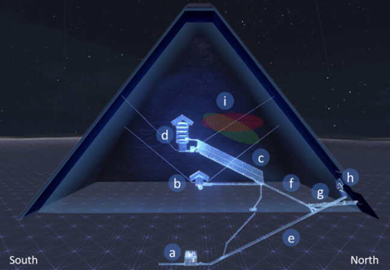

အခု လှို့ဝှက်ခန်းကို ရှာဖွေ တွေ့ရှိရာမှာ ထူးခြားချက် ကတော့ မြူယွန် (Muon) လို့ ခေါ်တဲ့ ကွမ်တမ် ဓါတ်မှုံ တွေကို အသုံးပြုပြီး ရှာဖွေ ဖော်ထုတ် နိုင်ခဲ့ခြင်းပဲ ဖြစ်ပါတယ်။
ဒီ လှို့ဝှက်ခန်းကို ၂၀၁၆ ခုနှစ်မှာ သိပ္ပံ ပညာရှင်တွေ စတင် သတိပြု မိခဲ့ကြတာ ဖြစ်ပါတယ်။ အဲ့သည် အချိန်က မြူယွန် သုတေသန ပညာရှင် တွေက ဒီ အခန်းကို စတင် သတိပြုမိ ခဲ့ကြတာပါ။
မြူယွန် ဆိုတာက ကွမ်တမ် အမှုန် လေးတွေ ဖြစ်ပြီး သူတို့ဟာ ထူထဲတဲ့ နံရံတွေ၊ ကျောက်သားတွေ ကို ဖြတ်သန်း သွားနိုင်စွမ်း ရှိကြပါတယ်။ ဒီ မြူယွန် တွေရဲ့ လားရာ လမ်းကြောင်းကို လေ့လာရာက ဒီ အခန်းကို စတင် တွေ့ရှိခဲ့ကြတာ ဖြစ်ပါတယ်။
ဆက်စပ်ဆောင်းပါး – အီဂျစ် မရဏကျမ်း ပုရပိုက် အပြည့်အစုံ ရှာဖွေတွေ့ရှိ
စတင် တွေ့ရှိချိန်က ဒီအခန်းကို စင်္ကြန် တစ်ခုဖြစ်မယ်လို့ ယူဆခဲ့ ကြပါတယ်။ ဒီ အခန်းဟာ ပိရမစ်ရဲ့ မြောက်ဖက် မျက်နှာစာ ဝင်ပေါက် အနီးမှာ တည်ရှိပါတယ်။ နောက်ထပ် မြူယွန် အသုံးပြု တိုင်တာ မှုတွေအရ ဒီ အခန်းရဲ့ အကြောင်းကို အတော်လေး အသေးစိတ် သိလာရပါတယ်။
ဂျာမနီနိုင်ငံ မြူးနစ် နည်းပညာ တက္ကသိုလ် (Technical University of Munich) က ပညာရှင် တွေဟာ အသံလွန်လှိုင်း (Ultrasound) နည်းပညာနဲ့ Endoscoe မှန်ပြောင်းတွေကို အသုံးပြုပြီး ဒီ အခန်း အတွင်းကို အသေးစိတ် လေ့လာ ခဲ့ကြပါတယ်။ သူတို့ရဲ့ မျက်မြင် လေ့လာချက် အရ ဒီ လှို့ဝှက်ခန်း တည်ရှိမှုကို ယခုအခါ အတည်ပြု နိုင်ပြီ ဖြစ်ပါတယ်။

ဒီ ပိရမစ်နဲ့ ပတ်သက်လို့ အသေးစိတ် လေ့လာမှု အမြောက်အများကို ပြုလုပ်ခဲ့ပြီး ဖြစ်ပါတယ်။ ဒါပေမယ့် ကြီးမားလှတဲ့ ဒီ ပိရမစ် ကြီးဟာ ခေတ်သစ် သုတေသီတွေ အတွက် ရှာဖွေ တွေ့ရှိရခြင်း မရှိသေးတဲ့ ပဟေဠိ အများအပြားကိုလဲ ပိုင်ဆိုင်ထားဆဲ ဖြစ်ပါတယ်။
ဆက်စပ်ဆောင်းပါး – ရှေးအီဂျစ် နတ်ဘုရားကျောင်းအောက် ဥမင်လှိုဏ်ခေါင်းကြီး တစ်ခု ရှာတွေ့
အခု မြူနစ် တက္ကသိုလ်က သုတေသီ တွေဟာ အပြည်ပြည် ဆိုင်ရာ သုတေသီတွေ ပါဝင်တဲ့ “ScanPyramids” သုတေသန စီမံကိန်းမှာ ပါဝင်တဲ့ အဖွဲ့ ဖြစ်ပါတယ်။ သူတို့ရဲ့ တွေ့ရှိချက်ဟာ စမ်းသပ်ဆဲ အဆင့်သာ ရှိသေးတဲ့ နည်းပညာ အသုံးပြုပြီး ရှာဖွေ တွေ့ရှိချက်ကို အတည်ပြု ပေးလိုက်တာမို့ အရေးပါတဲ့ တွေ့ရှိချက် ဖြစ်ပါတယ်။
အခု လှို့ဝှက်ခန်းဟာ ပိရမစ် ကြီးရဲ့ မူလ ဝင်ပေါက်ရဲ့ အပေါ်ဖက်နားမှာ တည်ဆောက်ထားတာ ဖြစ်ပါတယ်။ ဒီ မူလဝင်ပေါက်ဟာ ပိရမစ်ကို လာရောက် လေ့လာတဲ့ သူတွေ ဝင်ခွင့်ရတဲ့ ဝင်ပေါက် မဟုတ်ပါဘူး။

မြူးနစ် သုတေသီ တွေဟာ ဒီ လှို့ဝှက်ခန်းကို ပျက်စီးမှု မရှိစေပဲ ကြည့်ရှု လေ့လာနိုင်ဖို့ ကြိုးစားခဲ့ ကြပါတယ်။ ပိရမစ်တွေ ဆိုတာက ကမ္ဘာ့ သမိုင်း အမွေအနှစ်တွေမို့ သုတေသန ပြုမှုတိုင်းဟာ ပိရမစ် ကြီးကို ပျက်စီးမှု မရှိစေဖို့ အထူး သတိထား ဆောက်ရွက် ကြရပါတယ်။
ဆက်စပ်ဆောင်းပါး – အီဂျစ်မံမီ ၃ ခု၏ မျက်နှာအား DNA မှတဆင့် ပြန်ပုံဖေါ်
ဒီလို ပျက်စီးမှု မရှိပဲ လေ့လာနိုင်ဖို့ သုတေသီ တွေဟာ ရေဒါ နဲ့ Ultrasound သံလွန်လှိုင်း ကိရိယာ တွေအကူအညီနဲ့ စူးစမ်းမှု ပြုခဲ့ကြပါတယ်။ ဒီနည်းနဲ့ ဒီ လှို့ဝှက်ခန်းကို ဖွင့်ကြည့်စရာ မလိုပဲ ပျက်စီးမှု မရှိ လေ့လာ နိုင်ခဲ့ ကြပါတယ်။
ဒီ လေ့လာမှု တွေအရ ဒီ လှို့ဝှက်ခန်းရဲ့ အကျယ်အဝန်း နဲ့ ပုံသဏ္ဍာန်ကို သိရှိ လာခဲ့ ကြပါတယ်။ ဒီ့နောက် ပိုက်ပျော့မှာ တပ်ဆင်ထားတဲ့ မှန်ပြောင်း (Endoscope) ကို အသုံးပြုပြီး ဒီအခန်း အတွင်းကို မျက်မြင် လေ့လာ ခဲ့ကြပါတယ်။ (Endoscope ဆိုတာက အစာအိမ် နဲ့ အူတွေ ကြည့်တဲ့ မှန်ပြောင်းလိုမျိုး ကိရိယာ ဖြစ်ပါတယ်။)
သုတေသီ တွေဟာ ဒီ အခန်း အပြင်ဖက် နံရံမှာ စီထားတဲ့ ကျောက်တုံးတွေ အကြား လပ်နေတဲ့ နေရာလွတ် ကလေးကို ရှာဖွေ တွေ့ရှိ ခဲ့ကြပါတယ်။ ဒီ အုတ်ကြား ကနေ Endoscope မှန်ပြောင်း ထိုးထည့်ပြီး အခန်းတွင်း ကြည့်ရှုနိုင်ခဲ့ ကြပါတယ်။

ဆက်စပ်ဆောင်းပါး – ပိရမစ် တွေကို ဘယ်လို တည်ဆောက်ခဲ့သလဲ
ဒီအခန်းရဲ့ အရှည်ဟာ မူလက ၅ မီတာခန့် ရှည်မယ်လို့ ခန့်မှန်းခဲ့ ကြပါတယ်။ ဒါပေမယ့် အခု တိုင်းတာ ခန့်မှန်းချက်အရ ဒီ့ထက် ပိုရှည်တာကို တွေ့ရှိခဲ့ ကြရပါတယ်။
နောက်ဆုံး တိုင်းတာမှု အရ ဒီအခန်းဟာ အလျား ၉ မီတာ (ပေ ၃၀ ခန့်)၊ အမြင့် ၂ မီတာ (၆ ပေခွဲခန့်) နဲ့ အကျယ် ၂ မီတာခန့် ရှိပါတယ်။
Endoscope ကင်မရာနဲ့ ရိုက်ကူးမှု အရ ဒီ အခန်းအတွင်း လူဝင်ရောက် ခဲ့တဲ့ ခြေရာလက်ရာ မတွေ့ရ ပါဘူး။ ဒါ့ကြောင့် ဒီ အခန်းဟာ ပိရမစ်ကြီး ဆောက်လုပ်ခဲ့တဲ့ အချိန်က စလို့ နှစ်ပေါင်း ၄,၅၀၀ ကျော် လုံးလုံး လူသူ ဝင်ရောက်ခဲ့ခြင်း မရှိတဲ့ အခန်းတစ်ခု ဖြစ်ပါတယ်။
ဒီ အခန်းရဲ့ ပုံသဏ္ဍာန် နဲ့ အရွယ်အစား အရ စင်္ကြန်လမ်း (corridor) တစ်ခု ဖြစ်မယ်လို့ ယူဆ ကြပါတယ်။ ဒီအခန်းမှာ တြိဂံပုံ အမိုး ပါဝင်ပါတယ်။ ဒီ အခန်း တည်ဆောက်ခဲ့ရခြင်းရဲ့ ရည်ရွယ်ချက် ကိုတော့ ဖော်ထုတ်နိုင်စွမ်း မရှိ သေးပါဘူး။
ဒီ စင်္ကြန်လမ်းရဲ့ အဆုံးမှာ ဘာရှိလဲ ဆိုတာကို ပညာရှင်တွေ အဖြေရှာ နိုင်စွမ်း မရှိ သေးပါဘူး။ အီဂျစ် ရှေးဟောင်း ယဉ်ကျေးမှု ဌာနကတော့ အခုထက် အဆ ၁၀၀ ခန့် ပိုအားကောင်းတဲ့ Endoscope ကင်မရာ အသုံးပြုပြီး ဒီ စင်္ကြန်ရဲ့အဆုံးမှာ ဘာရှိလဲ ဆိုတာကို လေ့လာသွားဖို့ အစီအစဉ် ရှိတဲ့အကြောင်း သတင်းထောက် တွေကို ပြောကြား သွားပါတယ်။
Ref:
Egypt unveils hidden corridor in Giza pyramid | Phys
Muons unveiled new details about a void in Egypt’s Great Pyramid | Science News